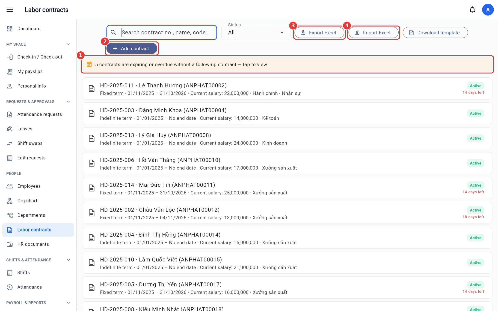
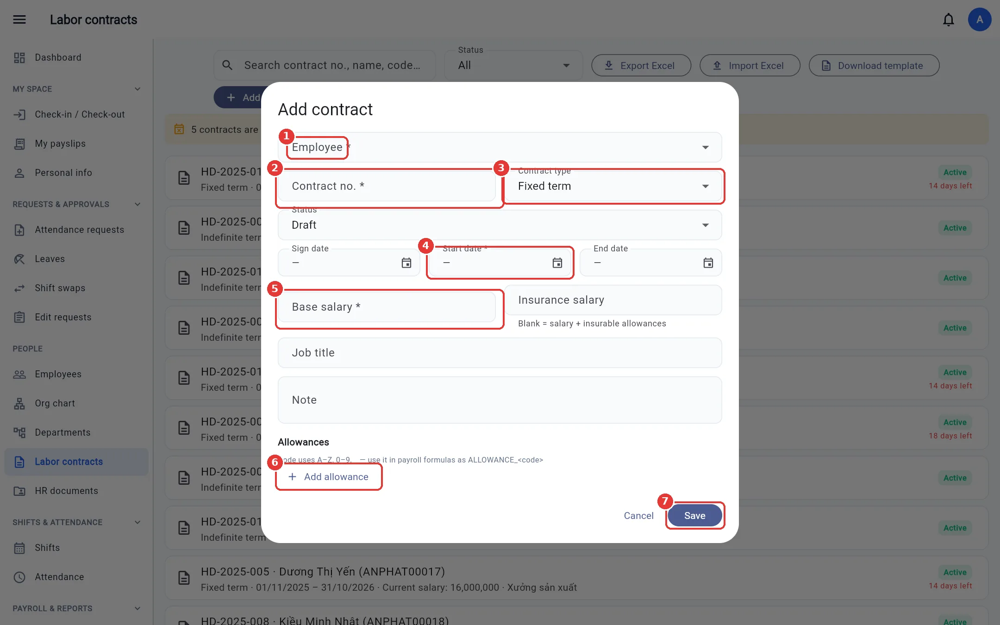
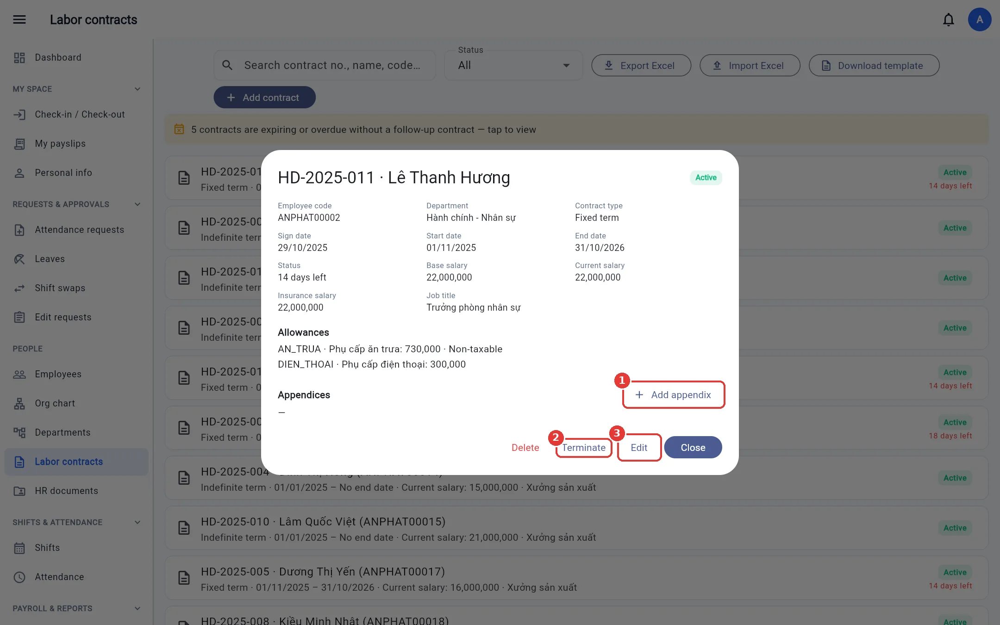
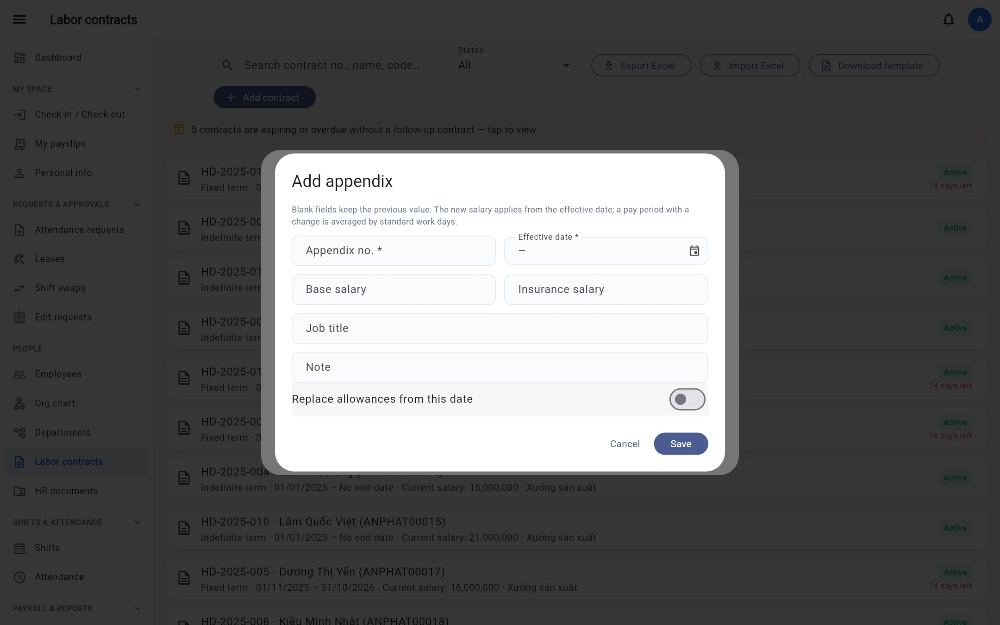

Labor contracts
Create contracts, allowances, activate, salary-increase appendices, terminate, track expiring contracts, Excel export / import.
For: HR
Contract list
Open Labor contracts. Search by contract number, name, employee code or department; filter by status (Draft, Active, Expired, Terminated). The orange banner at the top shows the number of contracts that are expiring soon or already overdue with no follow-on contract; click it to filter quickly.


Expiring contracts also appear in Dashboard → Risks & Warnings, and people with permission to view contracts are notified when N / 7 / 0 days remain (N is set in Company settings, default 30).
Create a contract
- Click Add contract.
- Choose the Employee and enter the Contract no. (unique within the company).
- Choose the Contract type: probation, fixed-term (up to 36 months), indefinite-term, seasonal / contractor.
- Enter the sign date, effective date and end date (leave blank for indefinite-term contracts).
- Enter the Base salary; if Insurance salary is left blank, it equals salary plus insurable allowances.
- Add allowance: code (A–Z, 0–9, _), name, amount, and whether it is insurable / taxable. The allowance code can be used in payroll formulas
as
ALLOWANCE_<code>. - Click Save. The contract is in Draft status.


Open a draft contract and click Activate to put it into effect. Two non-draft contracts for the same person cannot overlap in dates.
Appendices (salary increase, allowance / title changes)
- Click the contract, then Add appendix.
- Enter the appendix number, the effective date and only the fields that change (blank fields keep the previous value).
- Turn on Replace allowances from this date if you want to replace the whole allowance list, then Save.




If an appendix takes effect mid-month, that month's salary is calculated as a weighted average by the working days at each rate.
Terminate a contract
In the contract details click Terminate, enter the last working day and the reason. The contract becomes Terminated and no salary is calculated after that date.
Excel export / import
Export Excel creates a 2-sheet file (contracts + allowances). Edit it, then Import Excel, review each row in the preview and confirm. If the allowances sheet is missing, existing allowances are kept as they are.
No contracts to export yet? Click Download template: the file has a contracts sheet, an allowances sheet (headers only) and a Guide sheet describing
each column with examples (dates as yyyy-mm-dd, contract types, statuses, etc.).